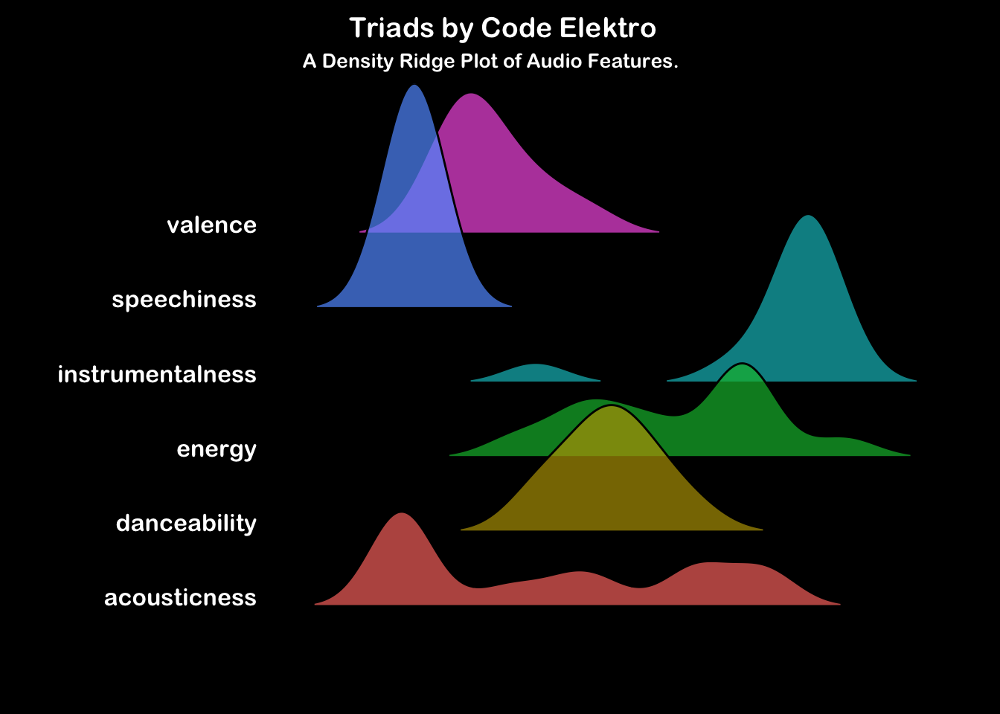

Triads
Instrumental
Synthwave
Electronic
Electro
Code Elektro’s exploration of future Japan’s criminal underworld
Dysto-Tokyo
Welcome to neon-lit streets, where the glint of laser-edged katana underlie the bustling cityscape. Where proud tradition is falling foul of organised exploitation. A realm where cybernetic dreams and dystopian nightmares converge in a symphony of pulsating synths and electrifying beats. Code Elektro’s masterpiece third album invites listeners on an immersive journey through a world where tradition meets technology, and the line between reality and virtuality blurs. With each track, the album paints a vivid portrait of a futuristic Tokyo, where shadowy figures roam the alleys and threat stalks the unwary.
For a formal description of the audio feature categories presented here, please consult the Spotify Developer API Documentation.
Triads is perfect for those moments when you crave an escape into a futuristic realm of imagination. Whether you’re embarking on a late-night drive through the city, diving into a cyberpunk novel, or simply seeking to enhance your creative flow, this album serves as the ideal soundtrack to accompany your journey into the unknown. Its pulsating rhythms and evocative melodies evoke a sense of adventure and intrigue, making it the perfect companion for any escapade into the realm of dystopian dreams.
Interpreting the Ridge Plot (Click to expand)
These ridge plots show a histogram of the mean audio feature values across each track in the album. Look across the horizontal axis at where the peaks for each feature occur. For example, if the album contains lots of tracks with busy vocals, the speechiness feature will show a peak to the right of the horizontal axis. Conversely, an instrumental album would have a speechiness peak to the left of the horizontal axis but you would also expect it to have a peak to the right of the axis in the instrumentalness feature.
The Tracks
Below are the mean audio feature values for each track. The last row (green) presents a mean summary of the album.
| track_name | danceability | energy | speechiness | acousticness | instrumentalness | valence |
|---|---|---|---|---|---|---|
| Rise of the Triads (Intro) | 0.31600 | 0.4540000 | 0.0471000 | 0.6570000 | 0.9000000 | 0.1350 |
| Shinobi | 0.46100 | 0.7640000 | 0.0344000 | 0.0045100 | 0.8940000 | 0.1190 |
| Night Train | 0.51300 | 0.5920000 | 0.0378000 | 0.2420000 | 0.8990000 | 0.1110 |
| Chinese Dreams | 0.41100 | 0.4140000 | 0.0262000 | 0.6480000 | 0.9740000 | 0.0732 |
| The Monk | 0.47300 | 0.9780000 | 0.0427000 | 0.0195000 | 0.7320000 | 0.4280 |
| In the Shadows | 0.56600 | 0.5280000 | 0.0297000 | 0.7830000 | 0.8750000 | 0.1900 |
| The Wilderness | 0.48400 | 0.7480000 | 0.0344000 | 0.0004190 | 0.3020000 | 0.3430 |
| International Karate | 0.57200 | 0.7820000 | 0.0357000 | 0.0080500 | 0.9510000 | 0.2830 |
| Triads | 0.44000 | 0.7550000 | 0.0362000 | 0.0101000 | 0.8320000 | 0.1610 |
| Mission Control | 0.65500 | 0.7330000 | 0.0549000 | 0.4410000 | 0.8910000 | 0.2560 |
| Silent Runner | 0.37300 | 0.2570000 | 0.0314000 | 0.3730000 | 0.8940000 | 0.1780 |
| Tokyo Dawn | 0.29500 | 0.3680000 | 0.0289000 | 0.8160000 | 0.9040000 | 0.1840 |
| Album Mean | 0.46325 | 0.6144167 | 0.0366167 | 0.3335482 | 0.8373333 | 0.2051 |
The ridge plot profile is remarkably similar to the ghostrunner ost, reviewed back in September 2023. Like ghostrunner, this albunm is low in speechiness and high in instrumentalness. In contrast, ghostrunner reported a broader distribution in valence than triads, which I find surprising. Triads is certainly a less menacing listen with some really beautiful melodies influenced by Japanese culture.
Rise of the Triads (Intro)
This introductory track sets the stage for adventure. With pulsating synths and an aura of anticipation, it serves as the perfect prelude to the sonic journey ahead.
Shinobi
“Shinobi” channels the spirit of classic ninja films with its driving rhythms and mysterious melodies. Its electrifying energy evokes intrigue and images of stealthy warriors navigating through moonlit landscapes, ready to face any challenge.
Night Train
My favourite track. “Night Train” is an inspired prelude to action. An inspiring ride through the skies of a neon-lit cyberpunk city. A steady tempo and glittering percussive synth arrangement introduce the city’s grand scale accompanied by an alluring mix of danger and opportunity.
Chinese Dreams
With “Chinese Dreams,” Code Elektro delivers a mesmerizing blend of Eastern-inspired melodies and retro-futuristic synths. Its hypnotic rhythms and evocative instrumentation transport listeners to a realm where ancient traditions meet cutting-edge technology.
The Monk
“The Monk” immerses listeners in a meditative soundscape, the onset of a surly tempest and a gong that could have been sampled straight from a ’70s martial arts flick. Contemplative melodies set to swelling rhythms create a sense of growing urgency.
In the Shadows
“In the Shadows” conjures images of clandestine meetings and covert operations with its brooding atmosphere and enigmatic melodies. Its pulsating rhythms and suspenseful build-ups create a sense of tension and intrigue, keeping listeners on the edge of their seats. Something dark is afoot, and only a select few will ever know of what happened this day.
The Wilderness
“The Wilderness” transports listeners to a landscapes where nature has been thoroughly hybridised with technology. Its expansive soundscapes and ethereal melodies evoke feelings of awe and wonder, then interspersed with an abundance of chiptune glitch and reverb, challenging assumptions and provoking wonder.
International Karate
This track is a steady movement with inspired homages to the sweet melodies of the East. Its minimalist approach provides a moment of introspection amidst the album’s high-energy tracks.
Triads
The title track of the album is a tour de force of synth-driven bliss. “Triads” starts with a subtle ascent evoking impending action or imminent discovery. Then somewhere a door is kicked through and violence spills out onto the street, with a bassy reverb drawing the attention of all passers-by to the apparent chaos. Its pulsating rhythms and euphoric melodies leave a lasting impression.
Mission Control
“Mission Control” takes listeners on a cosmic voyage through space and time. Its propulsive rhythms evoke the spirit of space exploration and the promise of discovery, inviting listeners to join in on an epic adventure to the far reaches of the universe.
Silent Runner
“Silent Runner” captivates listeners with its hauntingly beautiful melodies and hypnotic rhythms. A sweet soprano accompaniment counters a mysteriously brooding rhythm section. Its ethereal atmosphere and dreamlike quality create a sense of weightlessness, like drifting through the cosmos on a silent journey.
Tokyo Dawn
Closing out the album is “Tokyo Dawn,” a mesmerizing journey through to the dawn, bringing a sense of security and achievement. A sweet and contemplative outtro accompanying the hero through their jounrey home.
Overall
In conclusion, “Triads” is a captivating odyssey through a cybernetic dreamscape, where each track offers a unique sonic experience that transports listeners to distant realms of imagination. Whether you’re a fan of synthwave or simply appreciate immersive music that takes you on a journey, “Triads” is an album that is sure to leave a lasting impression.
For more music to encourage your work efforts, check out Productivity Pulse.